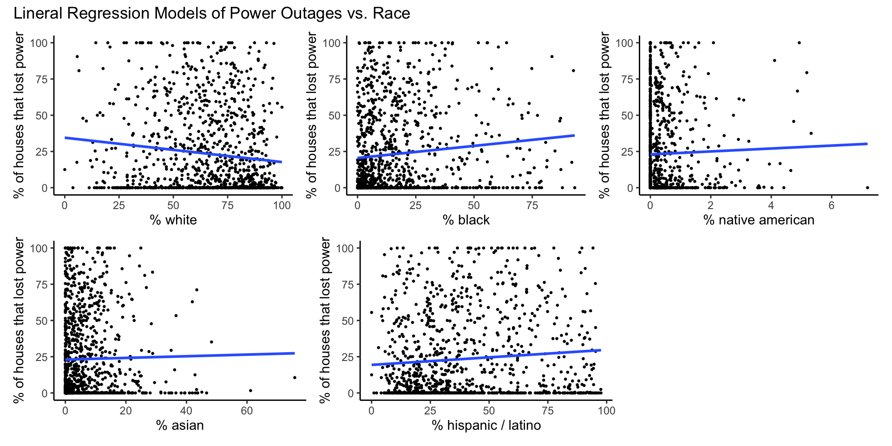
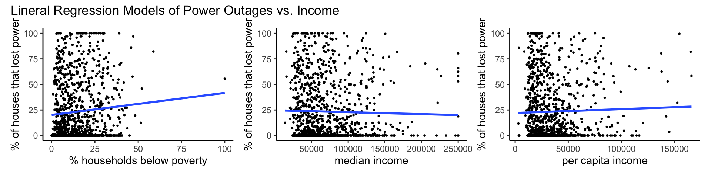
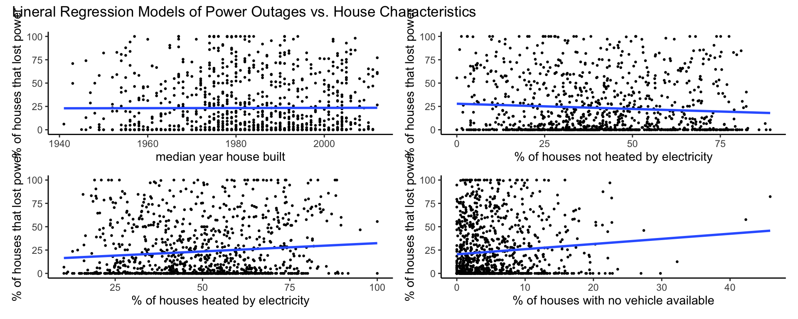

# load libraries used in analysis
library(tidyverse)
library(patchwork)Statistical Analysis
# read in data generated from geospatial analysis
blackout_census_data <- read_csv("data/census_tract_blackout_data_df.csv")Linear Regression
Linear regression was used to model the relationship between percent of houses that lost power and selected data from the U.S. Census Bureau’s American Community Survey (ACS).
Race
Percent white
model_pct_white <- lm(data = blackout_census_data, pct_houses_that_lost_power ~ pct_white)
summary_model_pct_white <- summary(model_pct_white)
plot_model_pct_white <- ggplot(data = blackout_census_data, aes(x = pct_white, y = pct_houses_that_lost_power)) +
geom_point(size = 0.5) +
geom_smooth(method = lm, formula = y~x, se = FALSE) +
theme_classic() +
labs(x = "% white", y = "% of houses that lost power")Percent black
model_pct_black <- lm(data = blackout_census_data, pct_houses_that_lost_power ~ pct_black)
summary_model_pct_black <- summary(model_pct_black)
plot_model_pct_black <- ggplot(data = blackout_census_data, aes(x = pct_black, y = pct_houses_that_lost_power)) +
geom_point(size = 0.5) +
geom_smooth(method = lm, formula = y~x, se = FALSE) +
theme_classic() +
labs(x = "% black", y = "% of houses that lost power")Percent native american
model_pct_am_native <- lm(data = blackout_census_data, pct_houses_that_lost_power ~ pct_am_native)
summary_model_pct_am_native <- summary(model_pct_am_native)
plot_model_pct_am_native <- ggplot(data = blackout_census_data, aes(x = pct_am_native, y = pct_houses_that_lost_power)) +
geom_point(size = 0.5) +
geom_smooth(method = lm, formula = y~x, se = FALSE) +
theme_classic() +
labs(x = "% native american", y = "% of houses that lost power")Percent asian
model_pct_asian <- lm(data = blackout_census_data, pct_houses_that_lost_power ~ pct_asian)
summary_model_pct_asian <- summary(model_pct_asian)
plot_model_pct_asian <- ggplot(data = blackout_census_data, aes(x = pct_asian, y = pct_houses_that_lost_power)) +
geom_point(size = 0.5) +
geom_smooth(method = lm, formula = y~x, se = FALSE) +
theme_classic() +
labs(x = "% asian", y = "% of houses that lost power")Percent hispanic / latino
model_pct_hispanic_latino <- lm(data = blackout_census_data, pct_houses_that_lost_power ~ pct_hispanic_latino)
summary_model_pct_hispanic_latino <- summary(model_pct_hispanic_latino)
plot_model_pct_hispanic_latino <- ggplot(data = blackout_census_data, aes(x = pct_hispanic_latino, y = pct_houses_that_lost_power)) +
geom_point(size = 0.5) +
geom_smooth(method = lm, formula = y~x, se = FALSE) +
theme_classic() +
labs(x = "% hispanic / latino", y = "% of houses that lost power")model_plots_race <- (plot_model_pct_white | plot_model_pct_black | plot_model_pct_am_native) /
(plot_model_pct_asian | plot_model_pct_hispanic_latino | plot_spacer()) +
plot_annotation(title = "Lineral Regression Models of Power Outages vs. Race")
model_plots_race
Age
Percent 65 and older
model_pct_65_and_over <- lm(data = blackout_census_data, pct_houses_that_lost_power ~ pct_65_and_over)
summary_model_pct_65_and_over <- summary(model_pct_65_and_over)
plot_model_pct_65_and_over <- ggplot(data = blackout_census_data, aes(x = pct_65_and_over, y = pct_houses_that_lost_power)) +
geom_point(size = 0.5) +
geom_smooth(method = lm, formula = y~x, se = FALSE) +
theme_classic() +
labs(x = "% 65 and over", y = "% of houses that lost power")Percent children under 18
model_pct_children_under_18 <- lm(data = blackout_census_data, pct_houses_that_lost_power ~ pct_children_under_18)
summary_model_pct_children_under_18 <- summary(model_pct_children_under_18)
plot_model_pct_children_under_18 <- ggplot(data = blackout_census_data, aes(x = pct_children_under_18, y = pct_houses_that_lost_power)) +
geom_point() +
geom_smooth(method = lm, formula = y~x, se = FALSE) +
theme_classic() +
labs(x = "% children under 18", y = "% of houses that lost power")model_plots_age <- (plot_model_pct_65_and_over | plot_model_pct_children_under_18) +
plot_annotation(title = "Lineral Regression Models of Power Outages vs. Age")
model_plots_age
Income
Percent households below poverty
model_pct_households_below_poverty <- lm(data = blackout_census_data, pct_houses_that_lost_power ~ pct_households_below_poverty)
summary_model_pct_households_below_poverty <- summary(model_pct_households_below_poverty)
plot_model_pct_households_below_poverty <- ggplot(data = blackout_census_data, aes(x = pct_households_below_poverty, y = pct_houses_that_lost_power)) +
geom_point(size = 0.5) +
geom_smooth(method = lm, formula = y~x, se = FALSE) +
theme_classic() +
labs(x = "% households below poverty", y = "% of houses that lost power")Median income
model_median_income <- lm(data = blackout_census_data, pct_houses_that_lost_power ~ median_income)
summary_model_median_income <- summary(model_median_income)
plot_model_median_income <- ggplot(data = blackout_census_data, aes(x = median_income, y = pct_houses_that_lost_power)) +
geom_point(size = 0.5) +
geom_smooth(method = lm, formula = y~x, se = FALSE) +
theme_classic() +
labs(x = "median income", y = "% of houses that lost power")Per capita income
model_per_capita_income <- lm(data = blackout_census_data, pct_houses_that_lost_power ~ per_capita_income)
summary_model_per_capita_income <- summary(model_per_capita_income)
plot_model_per_capita_income <- ggplot(data = blackout_census_data, aes(x = per_capita_income, y = pct_houses_that_lost_power)) +
geom_point(size = 0.5) +
geom_smooth(method = lm, formula = y~x, se = FALSE) +
theme_classic() +
labs(x = "per capita income", y = "% of houses that lost power")model_plots_income <- (plot_model_pct_households_below_poverty | plot_model_median_income | plot_model_per_capita_income) +
plot_annotation(title = "Lineral Regression Models of Power Outages vs. Income")
model_plots_income
House Characteristics
Median year house built
model_median_year_house_built <- lm(data = blackout_census_data, pct_houses_that_lost_power ~ median_year_house_built)
summary_model_median_year_house_built <- summary(model_median_year_house_built)
plot_model_median_year_house_built <- ggplot(data = blackout_census_data, aes(x = median_year_house_built, y = pct_houses_that_lost_power)) +
geom_point(size = 0.5) +
geom_smooth(method = lm, formula = y~x, se = FALSE) +
theme_classic() +
labs(x = "median year house built", y = "% of houses that lost power")Percent of houses not heated by electricity
model_pct_houses_not_heated_by_electricity <- lm(data = blackout_census_data, pct_houses_that_lost_power ~ pct_houses_not_heated_by_electricity)
summary_model_pct_houses_not_heated_by_electricity <- summary(model_pct_houses_not_heated_by_electricity)
plot_model_pct_houses_not_heated_by_electricity <- ggplot(data = blackout_census_data, aes(x = pct_houses_not_heated_by_electricity, y = pct_houses_that_lost_power)) +
geom_point(size = 0.5) +
geom_smooth(method = lm, formula = y~x, se = FALSE) +
theme_classic() +
labs(x = "% of houses not heated by electricity", y = "% of houses that lost power")Percent of houses heated by electricity
model_pct_houses_heated_by_electricity <- lm(data = blackout_census_data, pct_houses_that_lost_power ~ pct_houses_heated_by_electricity)
summary_model_pct_houses_heated_by_electricity <- summary(model_pct_houses_heated_by_electricity)
plot_model_pct_houses_heated_by_electricity <- ggplot(data = blackout_census_data, aes(x = pct_houses_heated_by_electricity, y = pct_houses_that_lost_power)) +
geom_point(size = 0.5) +
geom_smooth(method = lm, formula = y~x, se = FALSE) +
theme_classic() +
labs(x = "% of houses heated by electricity", y = "% of houses that lost power")Percent of houses with no vehicle available
model_pct_houses_no_vehicle_available <- lm(data = blackout_census_data, pct_houses_that_lost_power ~ pct_houses_no_vehicle_available)
summary_model_pct_houses_no_vehicle_available <- summary(model_pct_houses_no_vehicle_available)
plot_model_pct_houses_no_vehicle_available <- ggplot(data = blackout_census_data, aes(x = pct_houses_no_vehicle_available, y = pct_houses_that_lost_power)) +
geom_point(size = 0.5) +
geom_smooth(method = lm, formula = y~x, se = FALSE) +
theme_classic() +
labs(x = "% of houses with no vehicle available", y = "% of houses that lost power")model_plots_house <- (plot_model_median_year_house_built | plot_model_pct_houses_not_heated_by_electricity) /
(plot_model_pct_houses_heated_by_electricity | plot_model_pct_houses_no_vehicle_available) +
plot_annotation(title = "Lineral Regression Models of Power Outages vs. House Characteristics")
model_plots_house
Model Summaries
Discussion
Note: the purpose of this evaluation was not to predict houses that could be more likely to lose power in the future. This analysis attempts to identify disproportional vulnerabilities of the effected community.